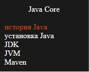
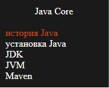

Как пользоваться сайтом
1. Нажми на значок меню чтобы его развернуть
2. Выбери раздел


3. Нажми на значок чтобы скрыть меню
4. Следи за нами в соц сетях
5. Поблагодарить автора можно перейдя по ссылке
6. Успехов в обучении